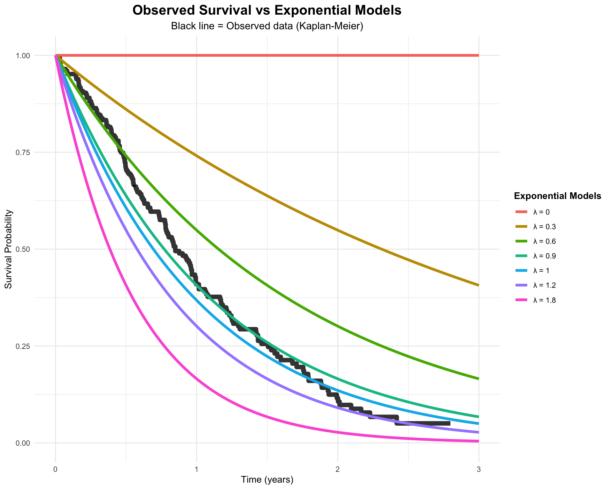
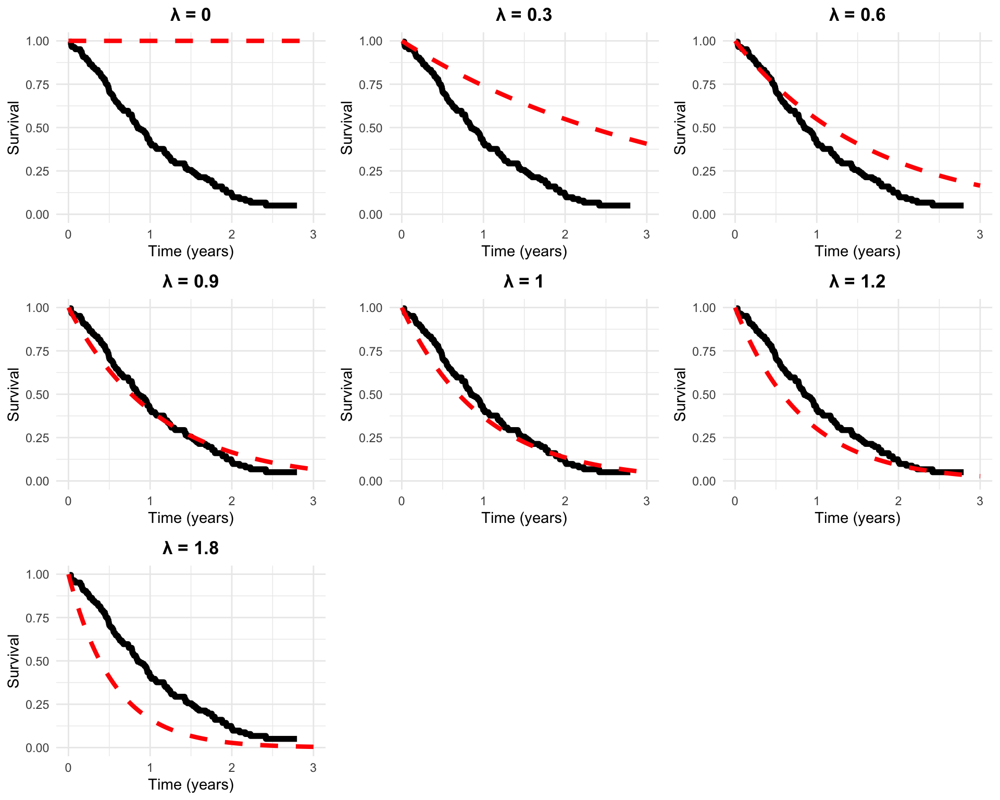

print(paste("Number of deaths:", sum(lung_clean$status ==2)))
[1] "Number of deaths: 165"
2 Compare Different Exponential Models
# Time points for plotting exponential curvestime_grid <-seq(0, 3, length.out =200)# Try different lambda valueslambda_values <-c(0, 0.3, 0.6, 0.9, 1, 1.2, 1.8)# Create plot dataplot_data <-data.frame()for(lambda in lambda_values) { temp_data <-data.frame(time = time_grid,survival =exp(-lambda * time_grid),lambda =paste("λ =", lambda) ) plot_data <-rbind(plot_data, temp_data)}# Extract KM datakm_data <-data.frame(time = km_fit$time,survival = km_fit$surv)# Create the comparison plotggplot() +# Kaplan-Meier curve (observed data)geom_step(data = km_data, aes(x = time, y = survival), color ="black", linewidth =2.5, alpha =0.8) +# Different exponential modelsgeom_line(data = plot_data, aes(x = time, y = survival, color = lambda), linewidth =1.5) +xlim(0, 3) +ylim(0, 1) +labs(title ="Observed Survival vs Exponential Models",subtitle ="Black line = Observed data (Kaplan-Meier)",x ="Time (years)",y ="Survival Probability",color ="Exponential Models" ) +theme_minimal() +theme(plot.title =element_text(hjust =0.5, size =16, face ="bold"),plot.subtitle =element_text(hjust =0.5, size =12),legend.position ="right",legend.title =element_text(face ="bold") )

3 Side-by-Side Comparison
# Create individual plots for each lambdaplots <-list()for(i in1:length(lambda_values)) { lambda <- lambda_values[i] exp_data <-data.frame(time = time_grid,survival =exp(-lambda * time_grid) ) p <-ggplot() +geom_step(data = km_data, aes(x = time, y = survival), color ="black", linewidth =2) +geom_line(data = exp_data, aes(x = time, y = survival), color ="red", linewidth =1.5, linetype ="dashed") +xlim(0, 3) +ylim(0, 1) +labs(title =paste("λ =", lambda),x ="Time (years)", y ="Survival") +theme_minimal() +theme(plot.title =element_text(hjust =0.5, face ="bold")) plots[[i]] <- p}# Arrange plotslibrary(gridExtra)do.call(grid.arrange, c(plots, ncol =3))

4 Summary
From these plots we can see:
λ = 0.3: Too small - curve drops too slowly, overestimates long-term survival
λ = 0.6: Decent - follows the general trend but a bit optimistic
λ = 0.9: Good fit - closely matches the observed curve
λ = 1.2: Decent - slightly pessimistic but reasonable
λ = 1.8: Too large - drops too quickly, underestimates survival
The exponential model S(t) = exp(-λt) provides a simple way to model survival, but finding the right λ value is crucial for a good fit to the data!
5 Finding the Best Lambda Using Maximum Likelihood
Now let’s use mathematics to find the optimal λ value and see how it compares to our visual assessment:
# Prepare data for MLE calculationlung_clean <- lung_clean %>%mutate(event = status -1) # Convert to 0/1 codingtimes <- lung_clean$time_yearsevents <- lung_clean$event# Calculate key statistics for MLEn <-length(times)d <-sum(events) # number of deathstotal_time <-sum(times) # sum of all observed timescat("=== Data Summary for MLE ===\n")